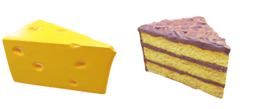
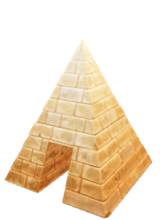
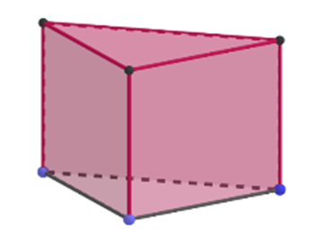

SUB. 1
Apa itu Prisma dan Limas?a. Prisma

Berdasarkan rusuk tegaknya, prisma dibedakan menjadi dua, yaitu prisma tegak dan prisma miring. Prisma tegak adalah prisma yang rusuk-rusuk tegaknya tegak lurus pada bidang atas dan bidang alas. Prisma miring adalah prisma yang rusuk-rusuk tegaknya tidak tegak lurus pada bidang atas dan bidang alas. Prisma miring disebut juga prisma condong.
Prisma adalah bangun ruang yang dibatasi oleh dua bidang berhadapan yang kongruen (sama dan sebangun), dan saling sejajar, serta bidang-bidang lain yang berpotongan menurut rusuk-rusuk yang sejajar.
Berdasarkan bentuk alasnya, terdapat prisma segitiga, prisma segi empat, prisma segi lima, dan seterusnya. Jika alasnya berupa segi n beraturan maka disebut prisma segi n beraturan (Nuharini & Wahyuni, 2008).
b. Limas

Seperti halnya prisma, pada limas juga diberi nama berdasarkan bentuk bidang alasnya. Jika alasnya berbentuk segitiga maka limas tersebut dinamakan limas segitiga. Jika alas suatu limas berbentuk segi lima beraturan maka limas tersebut dinamakan limas segi lima beraturan, dll.
Limas adalah bangun ruang yang dibatasi oleh sebuah segitiga ataupun segi banyak sebagai alas, dan beberapa buah bidang berbentuk segitiga sebagai bidang tegak yang bertemu pada satu titik puncak (Adinawan, 2017).
SUB. 2
Luas Permukaan Prisma dan Limas
a. Luas Permukaan Prisma

Luas Permukaan Prisma
Rusuk-rusuk tegak pada prisma di atas tegak lurus terhadap bidang alas, maka bidang-bidang tegak prisma berbentuk persegi Panjang. Luas permukaan prisma dapat diperoleh dengan menjumlahkan luas bidang-bidang pada permukaannya, yaitu sebagai berikut.
= Luas alas + luas bidang atas + luas bidang-bidang tegak
= Luas alas + luas alas + (a×t + b×t + c×t)
= (2 × luas alas) + (a + b + c) × t
= (2 × luas alas) + (keliling alas × tinggi)
Dengan demikian, dapat disimpulkan bahwa, untuk setiap prisma (tegak) berlaku rumus berikut,
b. Luas Permukaan Limas
Gambar 22 merupakan prisma segiempat sekaligus jaring-jaringnya. Luas permukaan limas O.ABCD dapat dinyatakan sebagai berikut.
Luas permukaan limas segi-n lainnya pun dapat ditentukan dengan menjumlahkan luas alas dan luas segitiga-segitiga yang merupakan bidang tegaknya.
Luas permukaan limas O.ABCD
= luas ABCD + luas △ABO + luas △BCO + luas △CDO + luas△ADO
= luas ABCD + (luas △ABO + luas △BCO + luas △CDO + luas △ADO)
= luas ABCD + jumlah luas segitiga bidang tegak
Dengan demikian, dapat disimpulkan, untuk setiap limas berlaku rumus berikut